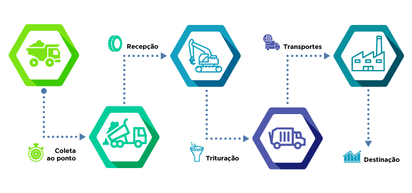

A reciclagem é um processo pelo qual materiais descartados, conhecidos como resíduos, são coletados,
separados, processados e transformados em novos produtos ou matérias-primas. O objetivo da
reciclagem é evitar o desperdício de recursos naturais, reduzir a quantidade de resíduos enviados
para aterros sanitários e minimizar o impacto ambiental associado à produção de novos materiais.
Como ocorre o processo de reciclagem?
COLETA:
Os resíduos recicláveis são coletados de forma seletiva nas residências,
empresas ou em pontos de coleta específicos.
Os recipientes de coleta podem ser separados por tipo de material,
como papel, plástico, vidro e metal, facilitando a triagem posterior.
TRIAGEM E SEPARAÇÃO:
Os resíduos coletados são transportados para instalações de triagem e separação.
Nesse local, os materiais são separados por tipo e classificados para remover contaminantes,
como papelão misturado a plásticos.
Pode-se utilizar técnicas manuais, como esteiras de triagem e trabalhadores especializados,
ou métodos automatizados, como sensores ópticos e separadores magnéticos.
PROCESSAMENTO:
Após a triagem e separação, os materiais recicláveis são processados para
serem transformados em matéria-prima utilizável.
Os materiais são limpos e preparados para o próximo estágio do processo de reciclagem.
Dependendo do tipo de material, diferentes técnicas de processamento são empregadas.
MATERIAIS RECICLÁVEIS:
Papel e papelão: são desfibrosados em uma polpa de celulose,
que é filtrada e refinada antes de ser transformada em novos produtos de papel.
Plástico: é triturado em pequenos fragmentos chamados grânulos ou flakes,
que são derretidos e transformados em novos produtos plásticos.
Vidro: é triturado em cacos, fundido a altas temperaturas e moldado
para criar novos objetos de vidro.
Metal: é derretido e refinado para remover impurezas, transformando-se em lingotes ou
chapas para a produção de novos produtos metálicos.
FABRICAÇÃO DE NOVOS PRODUTOS:
A matéria-prima reciclada é utilizada na fabricação de novos produtos.
Os materiais reciclados podem ser incorporados a diferentes indústrias,
como a indústria de embalagens, de construção, têxtil, automotiva, entre outras.
Os produtos reciclados podem incluir papel reciclado, garrafas plásticas recicladas,
embalagens de vidro recicladas, produtos metálicos reciclados, entre outros.
CONSUMO E DESCARTE TESPONSÁVEL:
Os produtos reciclados são adquiridos e utilizados pelos consumidores.
É importante que os consumidores façam um descarte responsável dos produtos
reciclados no final de sua vida útil, encaminhando-os novamente para o ciclo da
reciclagem.
A conscientização sobre a reciclagem e a importância de comprar produtos
reciclados é fundamental para manter o ciclo da reciclagem em andamento.

Pontos positivos e negativos da reciclagem
A reciclagem apresenta uma série de pontos positivos e negativos. Vamos explorar alguns deles:
Pontos positivos:
Conservação de recursos naturais: A reciclagem ajuda a preservar recursos naturais preciosos,
como árvores, minerais e água, ao reduzir a necessidade de extração e produção de novos materiais.
Redução do impacto ambiental: Ao reciclar materiais, evita-se a disposição em aterros sanitários,
que podem causar poluição do solo e da água. Além disso, a reciclagem diminui a emissão de
gases de efeito estufa e a demanda por energia associada à produção de novos materiais.
Economia de energia: A reciclagem muitas vezes consome menos energia do que a produção a
partir de matérias-primas virgens. Isso ocorre porque a reciclagem evita processos de
extração, transporte e refino necessários para a obtenção de novos materiais.
Criação de empregos: A indústria da reciclagem gera empregos em várias etapas do processo,
desde a coleta e separação dos materiais até o processamento e fabricação de produtos reciclados.
Pontos negativos
Dificuldades na coleta seletiva: A implementação eficaz da coleta seletiva pode ser um desafiem
em algumas regiões, requerendo infraestrutura adequada e conscientização da população. A falta
de adesão à separação correta dos resíduos pode comprometer o sucesso da reciclagem.
Limitações técnicas e econômicas: Alguns materiais são mais difíceis ou caros de reciclar
devido à sua composição química complexa, o que pode limitar a viabilidade econômica da
reciclagem desses materiais.
Qualidade inferior dos produtos reciclados: Em alguns casos, os produtos reciclados podem
apresentar uma qualidade inferior em comparação aos produtos feitos a partir de
matérias-primas virgens. Isso pode afetar a aceitação e demanda por esses produtos no mercado.
Desafios na conscientização e participação pública: A falta de conscientização e engajamento
da população em relação à importância da reciclagem pode limitar seu alcance e impacto.
A educação e a conscientização são fundamentais para promover uma cultura de reciclagem efetiva.